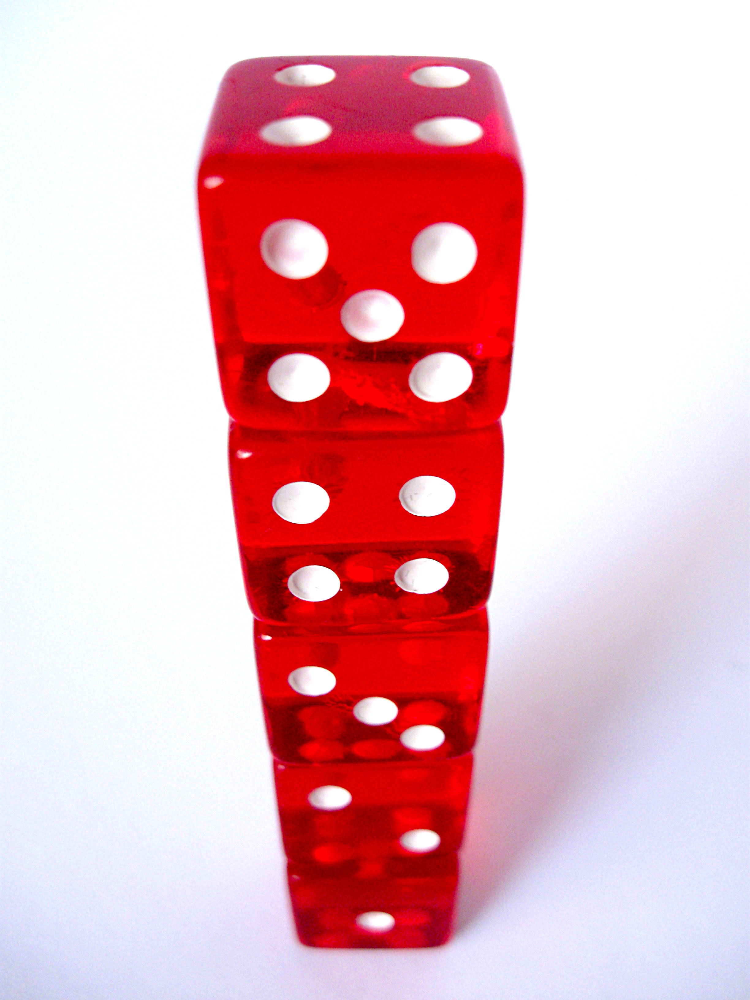
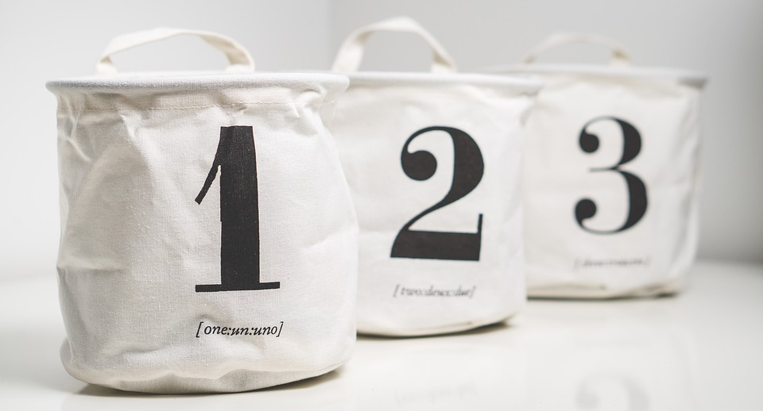

Introducción a los métodos de ordenación utilizando programación orientada a objetos:
Mediante las estructuras de datos se almacena información, que es recuperada de forma eficiente a través de los métodos de ordenación. Los métodos de ordenación que existen son:
- Burbuja
- Inserción
- Selección
Método de ordenación Burbuja
El método burbuja opera de manera que se acomoda el vector iniciando desde la primera casilla y desplazando el número mayor hasta acomodarlo en la última casilla, luego de tener acomodado el número más grande en la última posición, se continúa realizando el mismo proceso desde la primera casilla, comparando y encontrando el siguiente número más grande desde la primera casilla para desplazarlo a la penúltima casilla, de manera que los números se vayan ubicando de manera ordenada en el vector.
Este algoritmo es muy usado en todos los lenguajes de programación.
Método de Ordenación por Inserción

El método de ordenación por inserción opera de manera que al empezar se tiene un solo elemento, el cual es un conjunto ordenado. Luego, cuando hay n elementos ordenados ascendentemente, se toma el elemento k+1 para compararlo con los elementos ordenados previamente, de manera que al encontrar un elemento menor o no encontrar elementos, se detenga y sea insertado de manera que desplace hacia la derecha a todos los demás elementos mayores que el mismo.
Método de Ordenación por Selección

El método de ordenación por selección opera de manera que se requieren O(n^2) de operaciones para ordenar n elementos de una lista. Dicho de otra forma, este método consiste en buscar el número menor de la lista, realizar el intercambio con el que se encuentra en la primera posición, luego buscar el número menor de entre los números restantes en la lista para intercambiarlo con el número que se encuentra en la segunda posición y así con cada número hasta que la lista quede totalmente ordenada.